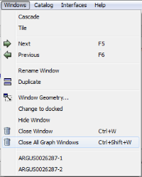

When a project is running, there might be many graph windows opened. How can we close them all together without having to close them one by one?
Tatiana,
If you delete a workspace it will remove any graphs that rely on it. So as long as you don’t mind deleting a workspace this can be a way to clear up graph windows.
If you want to go further and remove all of the workspaces and graphs at the same time there is an option under the File menu called Clear All Memory that will do both.
If you just wanted to delete all graph windows you could use some python like this
for w in windows():
if w.inherits('MultiLayer'):
w.close()
Hope this helps,
Nick
Thank you Nick, I wanted to keep the workspaces but delete all the graphs in one go - so would be nice to have an option which is not a script to do it.
Tatiana
I’ve created an issue for us to put an close all option into the Window menu.
We will try to get this into the upcoming release, but can’t promise that at this stage.
Good news, this has made it into the upcoming release, so this will be available in Mantid 3.9, when you have multiple windows of the same type (graph, matrices, tables, etc) you will get a “Close All Graph Windows” option in the windows menu.

Fantastic! thanks a lot! Tatiana